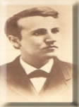

El niño del sonido y las lámparas Y así empieza su historia:Nancy Elliot Edison, sentía una gran alegría cuando la experimentada partera que le había entregado a sus otros tres pequeños, ponía entre sus brazos, al hermoso tesoro de mejillas sonrosadas.
Ese día 11 de Febrero de 1847, nacía un nuevo motivo para creer que Dios la protegía, Thomas sería su nombre. Con toda ternura bendijo su nuevo retoño. Era bello y perfecto, era el presagio de una vida que brotaba de ella con esperanzas y verlo convertido en un niño sano e inteligente.Como maestra de escuela, ya no tenía el tiempo suficiente para ocuparse en otras labores diferentes, fuera de la atención que requerían sus cuatro pequeños. Eso si cualquier oportunidad era aprovechada para enseñarle también a sus niños, para que en sus mentes infantiles creciera la semilla de la inteligencia.Nancy soñaba con hacer de todos ellos, unos niños con deseos de aprender algo cada día y fomentaba esa cualidad innata que veía en ellos con la curiosidad que lleva a descubrir todo rápidamente.
Samuel Ogden su esposo, manejaba el presupuesto familiar de manera irresponsable, era de mal carácter y siempre encontraba motivos para no llegar a casa y era mejor así, cualquier cosa de los pequeños lo ponían de mal genio. Y todo en el hogar escaseaba.
Nancy valientemente nada reprochaba, ya no conocía el nuevo Samuel, tan diferenta al de años atrás, cuando pidiera su mano y se unieran en matrimonio. Su carácter siempre a punto de explotar, hacía sufrir a Nancy y con todos sus esfuerzos, no podía evitar que sus pequeños fueran el objeto de sus furias. Su labor como maestra de escuela le permitía sostener a sus niños en lo más esencial, por eso no se incomodaba. Pero un día en Milán Ohio, a su pequeño Thomas le dió la escarlatina, epidemia que estaba presente en muchos hogares y su pequeño fue el más afectado.La erupción de las manchas rojas invadían su cuerpecito. La infección afectó sus oídos y le supuraban, era lo que más le preocupaba y por más que Nancy lo cuidara noches y días, la enfermedad seguía, y Nancy tuvo que dejar sus clases, mientras Samuel complicaba la situación con sus riñas callejeras.Su pequeño no sonreía y su cuerpo afiebrado le recordaba los altos hornos de las fábricas que rodeaban su vecindario. Cuando ya el niño mejoró lo inscribió en el colegio más cercano. Pero a los tres meses una cita en el colegio la sorprendió.Su niño Thomas, decían que era un retardado mental, que podía afectar y atrasar a los niños normales que asistían en su mismo curso, lo indicado era buscar una institución para retardados, que ellos no eran tan especialistas.Nancy conocía su Thomas, sabía muy bien que lo que le decían no era cierto, así que dando media vuelta, tomó la mano de su niño y salió de la tal escuela.Al salir le dijo a Thomas: ahora tú serás mi alumno, eres mi niño adelantado, seré tu maestra permanentemente. Así en la parte de atrás del almacén donde ya trabajaba, el niño conoció a su mamá maestra, de ella aprendió a leer, escribir, contar, sumar y aprender todo lo que necesitaba.
Ver, oír y pensar, son difíciles de expresar,
Unas veces hacen reír, oras veces hacen llorar.
Es otra historia que debo contar,
La de un niño que supo triunfar.Con una madre muy buena y un padre regular.
El niño por una fiebre puso a todos a temblar.
La escarlatina maluca, cambió su forma de escuchar.
Y en la escuela en 3 meses hizo a los maestros equivocar.Para ellos sólo era un niño con retardo mental.
Lo echaron del colegio lo que tuvieron que lamentar.
Por no entender al niño discreto, que si tuvo una madre de verdad.
Y en sus rodillas aprendió, todo lo que se debe apreciar.A los 9 años para su madre empezó a trabajar,
Como ayudante del tren y así aprender a ganar,
Imprimía hojitas que vendía a todos en la vía,
Para ayudar a quienes al tren se subían.Olvidó las golpizas que el padre le quiso dar.
Fue un niño increíble que se hizo respetar.
Aprendió desde chiquito, que todo es útil para observar,
Sin dejar detalle que el pudiera aprovechar.Y así creció el Gigante, que en Menlo Park se fue a alojar.
Con el Primer Taller del mundo para negocios Inventar.
Reunió su equipo de Genios y a todos los puso a pensar.
Y llenar el mundo de aparatos que se pudieran disfrutar.Encarcelaron el sonido, en los discos para coleccionar,
Y llenaron el Universo con melodiosas voces para cantar,
Inventaron las bombillas para a todos iluminar,
Consiguiendo miles de patentes y la Tierra alegrar.Su nombre Thomas Alva Edison, sin el nombre del papá,
Pues el amor a la Ciencia, le agradecía a su mamá,
Llegando a ser el Inventor de los más grandes de verdad,
Enriqueciendo al Hombre con beneficios para la Humanidad.
Nació hace muchos años y jamás se morirá,
Su Estrella y su Nombre crecieron para la Eternidad,
Eso le pasa a todos los que trabajan para la humanidad,
Con ejemplos que no se borran, quedándose para recordar.
16 Junio 93.